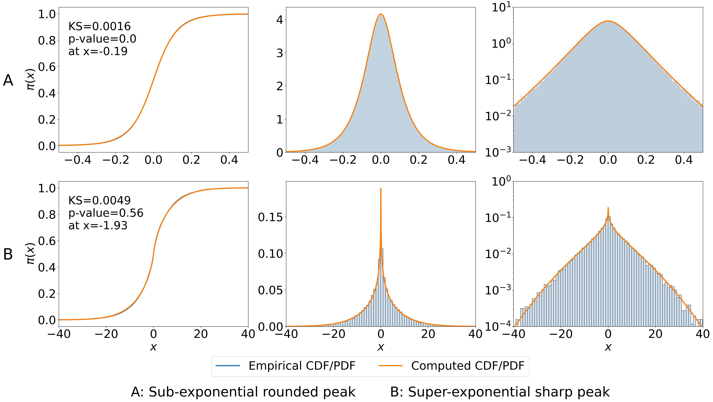

✳ AN INTERACTIVE RESEARCH JOURNEY
The shape
of an image.
A picture is made of pixels.
Its hidden patterns tell a bigger story.
Build a probability model. Put it to the test.
Discover where it sees clearly—and where it doesn’t.
Try the slider. A generated teaching image, transformed in your browser.
01 / THE PUZZLE
One observation.
Many possible pictures.
Imagine a tiny camera that sees two pixels but only records their average. Move the slider. How many different pictures can give it the same reading?
The measurement never changes.
The missing detail does.
d = (x₁ − x₂) / √2
The data alone cannot choose a picture. We need assumptions about which pictures are plausible.
In an inverse problem, we observe what a measurement process leaves behind and work backward to the original signal. Blurring, noise, or missing measurements can leave many plausible answers.
A prior describes which answers a model expects before combining that information with this observation. A posterior combines the prior with a measurement model and the data. Our study asks whether a particular family of priors resembles image data in the first place.
02 / CHANGE THE ALPHABET
Pixels describe brightness.
Coefficients describe patterns.
The two-pixel detail above is the beginning of a Haar wavelet transform: averages and differences, repeated at different scales. Try keeping only the strongest details of a larger image.
THE SAME IMAGE, A DIFFERENT DISTRIBUTION
A coefficient near zero means little contrast at that location and scale. A large coefficient can encode an edge.
A few big details and many small ones: this is the intuition behind quasi-sparsity. Try “Busy texture” to see why the image matters.
RMSE is the square root of the mean squared pixel error; lower is closer. The error uses the unclipped reconstruction; displayed brightness is clamped to [0, 1]. This teaching histogram pools all detail scales. The paper fits carefully chosen groups of related coefficients. The retention exercise illustrates a representation; it is not a reconstruction method evaluated in the paper.
A coefficient is a number that tells us how much of a pattern is present. Fourier components describe frequencies; Haar wavelets describe local averages and changes; Gabor filters respond to oriented textures; AlexNet filters respond to learned local features.
The research models distributions of these numbers across image collections. It does not fit a bell curve to the colors of a single photograph. Choosing a representation changes both the patterns we see and the assumptions we make.
03 / A DISTRIBUTION MADE OF DISTRIBUTIONS
Keep the center.
Change the width.
A bell’s variance θ measures spread; its standard deviation is √θ. A single normal distribution has one familiar bell shape. What if every draw could come from a different-width bell—all centered at zero?
- 1 Pick a variance θ.
- 2 Draw X from N(0, θ).
- 3 Repeat. Collect the values.
Each thin curve is weighted equally. The thick curve is their mixture.
The mixture chooses a bell for each draw. It does not average several random draws. The widths vary; the centers stay at zero.
At full width variety, the variances use midpoint quantiles of an exponential distribution: a special case of the generalized-gamma mixing law. More bells refine this finite approximation to an integral.
Before moving on: could this mixture have two separate humps?
04 / MEET THE ACTUAL MODEL
A sharp peak.
A long tail. Your choice.
The peak describes values clustered near zero; the tails describe unusually large positive or negative values. Many small coefficients and occasional large ones need more flexibility than one bell. A generalized-gamma distribution chooses the variances; mixing the resulting normal distributions creates the prior.
β = (η + 1.5) / r =
Exponential variance mixing creates the Laplace distribution.
A density is not a probability at a point. Area under the curve gives probability. A log scale makes small tail densities visible.
Shape and scale interact: changing ϑ can compensate for a change in shape. The positive-r sliders cover a finite-peak subset of the family; still smaller η can create an unbounded peak. A Gaussian is approached when the mixing variances concentrate, rather than appearing at one finite slider setting.
Open the mathematics
The hierarchy behind the picture:
The mixing density is fΘ(θ) = |r| / [Γ(β)ϑ] · (θ/ϑ)η+1/2 · exp[−(θ/ϑ)r] for θ > 0. Here Γ is the gamma function, which extends the factorial. The browser integrates a normalized log-gamma quadrature; samples use the hierarchy above.
Under this parameterization, Laplace has r = 1, η = −1/2, with scale √(ϑ/2). Cauchy has r = −1, η = −2, with scale √(2ϑ). The presets follow the defining equations, including these η values. A Cauchy is centered at zero but has no finite expectation or variance.
For r > 0, tail behavior is governed asymptotically by exp(−c|x|2r/(1+r)), up to other factors. For r < 0, density tails are proportional to |x|2η+2; η controls that power-law exponent. These distinctions matter when interpreting the controls.
The η = 0 relationship to ℓp regularization concerns a profiled joint-MAP construction. It should not be read as saying every marginal curve at η = 0 is exactly a familiar ℓp density.
Definitions and parameter space · §3.2 ↗05 / PUT A MODEL ON TRIAL
A curve can look right.
Measure the gap.
A cumulative distribution function, or CDF, asks: “What share lies at or below this value?” The Kolmogorov–Smirnov distance is the biggest vertical gap between the model’s answer and the sample’s answer.
—
Drag the width or try a different family.
The search tests 24 shape pairs and matches their variance to this sample. It is a small, visible analogue of the paper’s much larger fitting procedure.
This sample is generated from a known generalized-gamma normal mixture, not copied from the paper. Candidates are evaluated on the same sample used to fit them. These are descriptive KS distances, not calibrated p-values or held-out performance scores.
SMALL GAP ≠ STATISTICAL NONREJECTION
More observations.
A stricter ruler.
Hold a hypothetical gap at D = 0.02. Under an ideal test of a fully specified continuous model with independent samples, the approximate 5% cutoff is 1.358 / √n.
A separate fixed-model illustration. This cutoff is not applied to the fitted toy model above. Fitting parameters from the same data or dependent observations changes test calibration.
KS assumptions and limitations · NIST ↗06 / LEAVE THE TOY WORLD
Real image collections.
A more demanding question.
Our paper studied seven main datasets across remote sensing, natural images, and synthetic brain imaging, with a small classical-image comparison set. The goal was to test the realism of the prior itself.
THE RESEARCH RECIPE / EXPLORE EACH STEP
WHAT SHARE OF COEFFICIENT GROUPS PASSED?
A group bundles related coefficients across the image collection and models them with one distribution.
passes, as reported
Shares of fitted coefficient groups, not shares of images or pixels. Table 4 does not give per-row group counts. Empty settings are not inferred or simulated.
Watch spaceNet change: 100% Fourier → 53.1% Haar → 42.9% AlexNet filters. The representation changes which patterns the prior has to explain.
What does “pass” mean here?
“Combined” adds reported statistical and practical passes. Practical passes also involve visual judgment. These are optimized descriptive fits; a larger model family can improve in-sample fit without establishing better out-of-sample prediction.
A LOOK AT THE ACTUAL EVIDENCE
Two real fits.
Two different shapes.
Figure 8 shows a rounded-peak, slow-tail example from pastis Fourier coefficients, and a sharp-peak, fast-tail example from COCO indoor Haar coefficients. The browser examples above are simulations; this figure is from the paper.
Open Figure 8 in context ↗
View full-size figure ↗07 / THE MUSEUM OF USEFUL FAILURES
A good model knows
where it stops.
This family is symmetric and has a single central peak. Turning the knobs cannot create every possible distribution. Can you spot the feature that breaks its assumptions?
WHICH FEATURE CANNOT THE FAMILY REPRODUCE?
These are constructed examples, not digitized research data. The paper reports asymmetry, multiple modes, and severe spike-and-slab-like cases. Our exact point-mass example illustrates a structural limit: a very sharp continuous density can still be allowed, but a true atom is different.
ONE MORE TWIST
Same histograms.
Hidden connections.
Before shuffling, the plotted coordinates use the same normal-generated marginal samples and have zero sample correlation. Yet every point obeys |Y| = |X|: knowing one magnitude tells you the other.
The points lie on two diagonals. They are dependent even though their correlation is zero.
A constructed counterexample. The paper measures covariance between some coefficient groups; it explicitly does not establish independence within or across all groups.
08 / WHAT CHANGED?
Better assumptions.
A clearer picture.
The premise
A useful imaging prior should resemble the coefficients it models, not just make an algorithm convenient to run.
The finding
This flexible family describes many tested coefficient groups. The useful parameter region extends beyond familiar special cases. The answer depends on the dataset, representation, and grouping.
The boundary
Good marginal fit is one ingredient. It does not by itself prove independence, calibrated posterior uncertainty, or improved real-world reconstruction.
The next step is to fit assumptions to relevant data—and test the full inference pipeline for its intended task.
FOLLOW THE THREAD
Sources & field notes.
Do Generalized-Gamma Scale Mixtures of Normals Fit Large Image Datasets?
Brandon Marks, Yash Dave, Zixun Wang, Hannah Chung, Riya Patwa, Simon Cha, Michael Murphy & Alexander Strang.
arXiv:2512.17038v3 · 10 April 2026 · Preprint.
How this companion stays faithful to the research
Equations before shorthand. Sampling and density calculations follow Eqs. (2)–(4). Preset special cases include the necessary shape parameters; the CDF is evaluated as E[Φ(x/√Θ)]. Plotting and search use numerical approximations, not symbolic exact curves.
Simulations are labeled. The toy sensor, generated images, mixture draws, KS exercise, and failure cases teach concepts. They are not observations from the research datasets. The reported-results explorer and Figure 8 are explicitly attributed paper evidence.
Scope matters. The paper’s medical datasets are generated brain images. Its fits are evaluated on the observed coefficient distributions, with practical categories involving judgment. Conventional fixed-null KS thresholds require assumptions that parameter fitting and dependence can change.
Numerical checks. The implementation is checked against exact Laplace and Cauchy densities/CDFs, probability normalization and symmetry, stepwise KS gaps, and orthonormal Haar round trips. The interactive range is intentionally bounded for clarity and numerical reliability.